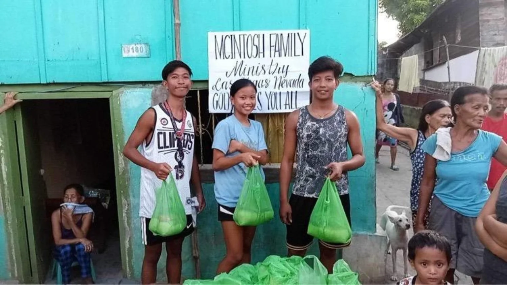
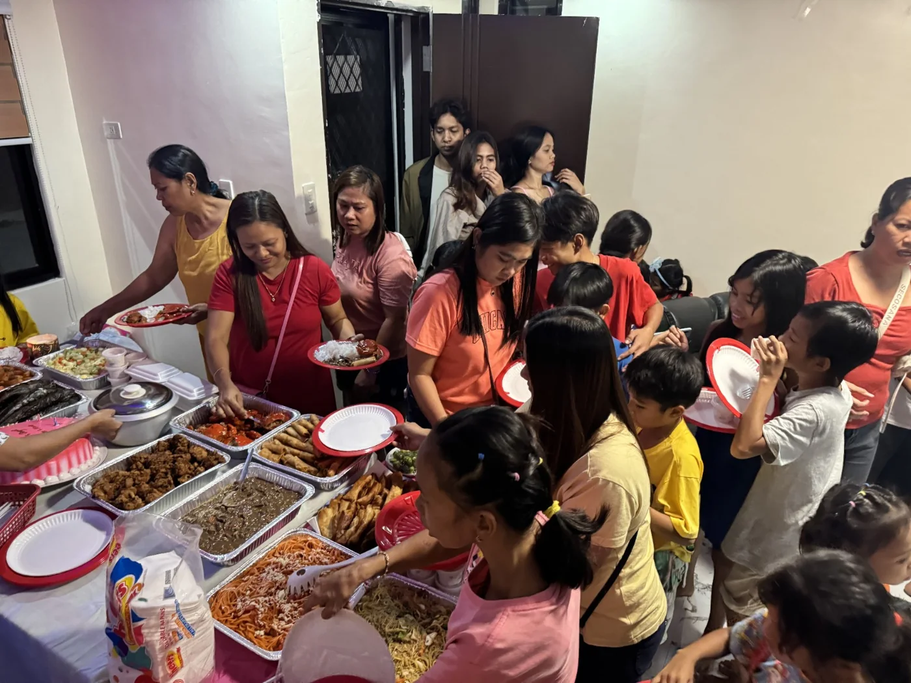

🥫
Food Distribution
To alleviate food insecurity in the local community by providing equitable access to nutritious groceries while seamlessly connecting individuals to essential social services, housing support, and financial resources.
This work is grounded in service, humility, and fellowship—meeting people where they are while guiding them toward healing, accountability, and sustainable growth.

To alleviate food insecurity in the local community by providing equitable access to nutritious groceries while seamlessly connecting individuals to essential social services, housing support, and financial resources.
Looking for like-minded organizations that understand teamwork and are about cooperation for the greater good of humanity.
If you have a people-first mindset and a gentle spirit, come partner with us. We are always looking for those who want to be in cooperation with one another for the enrichment of all.
These moments show the full rhythm of outreach—from volunteer preparation to community fellowship and direct distribution.



Outreach includes more than meeting physical needs. KMI also creates opportunities for teaching, conversation, prayer, and spiritual encouragement.